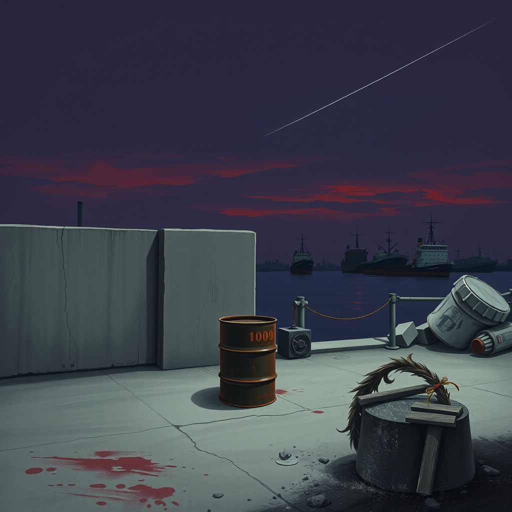
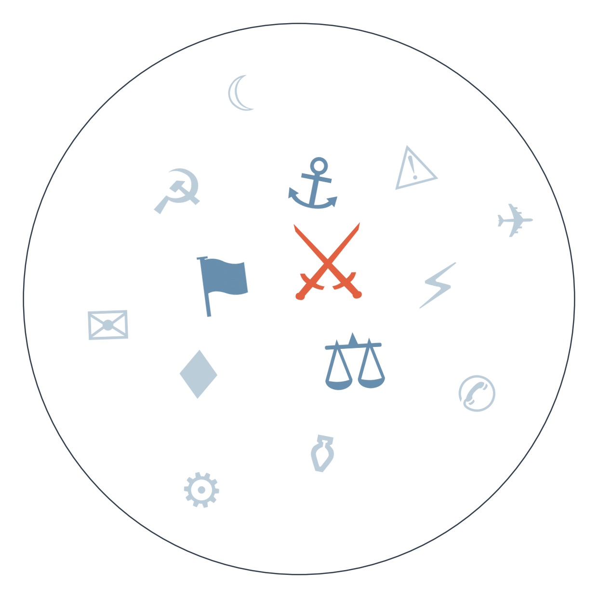

Ранковий бріф · огляд світової преси

США за добу знищили п'ять іранських танкерів біля острова Харг, а Тегеран відповів ракетним ударом по американській базі в Йорданії. Нафта четвертий день поспіль дорожчає й наближається до 100 доларів за барель, а хусити тим часом завдали найважчого за роки удару по Саудівській Аравії, поранивши 73 людини — і це вже не два окремі конфлікти, а по суті один фронт: межа між ірано-американським протистоянням і війною в Ємені стирається на очах (ескалація навколо Ормузької протоки та війни в Ємені).
Британія, Франція, Канада та ще щонайменше вісім країн ЄС оголосили заборону торгівлі товарами з ізраїльських поселень на Західному березі, а Британія додала санкції проти компаній, причетних до їхньої розбудови. Ізраїль назвав це "ворожим" кроком і зачинив консульство Британії у відповідь — це перший великий санкційний удар по Ізраїлю від союзників поза колективним рішенням ЄС, і розколює він західну коаліцію так само, як раніше розкололо її небажання ЄС відкрити спільні запаси Patriot для України: єдності немає ні щодо зброї, ні щодо тиску на Тель-Авів (розкол ЄС щодо підтримки України та тиску на Ізраїль).
США запровадили заборону на імпорт канадських молочних продуктів, алкоголю й мотоциклів у відповідь на канадські мита до 50% на американські товари. Торгова війна між сусідами по Північній Америці переходить від погроз до конкретних заборонних списків — і це вже не дипломатична пря, а справжній розрив звичних ланцюгів торгівлі, що підриває образ спільного економічного простору напередодні проміжних виборів у США.

Хто почав першим: танкери, база в Йорданії і мовчання про постраждалих
Замовчують: точну кількість жертв серед екіпажів танкерів і те, чи всі уражені судна справді належали військовим структурам, а не приватним компаніям.
Чому розходяться: Al Arabiya, тісно пов'язаний із саудівською позицією, зацікавлений показати силу США проти спільного регіонального супротивника. Haaretz пише з ізраїльської перспективи, де регіональна ескалація підважує власну безпекову картину, тому фіксує послідовність причин і наслідків, а не героїзує жодну сторону. BelTA як державне білоруське джерело уникає прямої оцінки, бо Мінськ балансує між союзним Тегерану Кремлем і бажанням не псувати відносини із Заходом. Iran International, фінансований опозиційними колами, зацікавлений показати іранський режим агресором, що веде країну до економічної прірви, а не жертвою.
Вибори 25 жовтня — реакція на протести чи на Младича
Замовчують: жодне з чотирьох джерел не називає конкретних вимог протестувальників, які пояснювали б, чому саме зараз і чому саме 25 жовтня.
Чому розходяться: Daily Sabah, близький до турецької влади, зацікавлений показувати вуличний тиск як рушійну силу демократичних змін у сусідніх країнах. Index.hr традиційно критичний до Вучича, але тут обирає нейтральну цитату, залишаючи оцінку читачеві. EUobserver як брюссельський майданчик тисне на євроінтеграційний вимір, зв'язуючи внутрішню сербську політику з питанням вступу до ЄС. Австрійські мовники, географічно й економічно тісно пов'язані з Балканами, обирають статистичну, безоціночну подачу.
Ормузький вузол: заява Ірану про "заборонену зону" в протоці підштовхнула нафту до чергового зростання → сьогодні США знищили п'ять іранських танкерів, Іран ударив по базі в Йорданії, а хусити завдали найважчого за роки удару по саудівських містах → веде до дедалі імовірнішого сценарію, коли локальна ємено-саудівська війна і глобальне протистояння Іран-США зливаються в один фронт, а Саудівська Аравія, за нашим прогнозом, може звернутися до Ради Безпеки ООН щодо удару по танкеру.
Patriot з чужих запасів: колективний механізм спільних запасів Patriot у ЄС лишається заблокованим → Німеччина стала першою великою країною ЄС, яка пішла на пряму двосторонню передачу ракет PAC-2 зі своїх запасів в обхід цього механізму → складається мозаїка двосторонніх рішень замість спільного, і питання, чи вистачить цього до зими, лишається відкритим.
Карфаген без завершення: після відставки генерального прокурора Кравченка на тлі корупційного скандалу руху немає → далі очікується призначення наступника, за яким уважно стежать ЄС і МВФ як за тестом реальної незалежності прокуратури, а не косметичної реформи.
Нафта четвертий день поспіль дорожчає й наближається до 100 доларів за барель через ескалацію навколо Ірану та Ємену, посилюючи інфляційний тиск напередодні засідання ФРС 12 вересня. США заборонили імпорт канадських молочних продуктів, алкоголю й мотоциклів — конкретний список підриває образ спільного північноамериканського ринку. Катар повідомляє про суттєве зростання бюджетного дефіциту, пов'язуючи це з ситуацією в Ормузькій протоці.
Bild після провалу Мерца в Саксонії-Ангальт іронічно питає, чи "впорається канцлер сьогодні, чи отримає ще одну ляпаса" — тоді як якісний Spiegel сухо констатує "генеральні дебати" без емоцій. Швейцарський Blick подає перемогу АфД як подарунок від Трампа — "Німці нарешті мають досить" — переказуючи його привітання так, ніби це підтверджений факт, а не піар-репліка. Індійський Times Now живе своїм світом: між "нестабільністю на Близькому Сході" і номінаціями учасників реаліті-шоу різниці в подачі майже не помітно.
Німеччина передає Україні ракети PAC-2 для Patriot з власних запасів Бундесверу — перший випадок, коли велика країна ЄС іде на це напряму, оминаючи заблокований колективний механізм, і це посилює протиповітряну оборону напередодні зими, якої Зеленський уже прямо очікує.
Російський безпілотник уразив будівлю телеканалу "Ми — Україна" в Києві просто під час прямого ефіру, поранивши п'ятьох людей — Зеленський назвав це "новим етапом деградації Росії", і символічність удару по медіа підсилює тиск на партнерів прискорити постачання ППО.
Нафта, що наближається до 100 доларів через ескалацію навколо Ірану, вигідна бюджету Росії й ускладнює розрахунок ефективності "стелі" цін на російську нафту саме тоді, коли ЄС готує чергове продовження санкцій.
Понад тиждень після зсуву в Гьїронгу досі немає офіційної статистики жертв — мовчить саме китайська влада централізовано, тема витіснена спершу Саксонією-Ангальт, тепер ескалацією навколо Ірану, і жодне велике видання не наполягає на цифрах.
Плани скорочення 50 тисяч робочих місць у Volkswagen практично зникли з німецької преси відразу після рекорду АфД — DW і Spiegel обговорюють політичний шок, а економічний наслідок для автопрому лишився без деталізації, хоча наш активний прогноз про протести IG Metall до 18 вересня саме про це.
Колишній генеральний прокурор Грузії, обвинувачений у себе на батьківщині у вбивстві, очолив у Росії підрозділ, що воює проти України — тему підняли лише пострадянські видання, великі західні медіа мовчать, бо історія вимагає регіонального контексту, якого в них немає.
Ємено-саудівська ескалація може перетворитися на самостійний фронт, не залежний від графіка ірано-американського протистояння. Ґрунтується на аналізі Foreign Policy й серії новинних повідомлень із кількох країн про "найважчий за роки" удар хуситів.
Корпус вартових готує реальні удари по танкерах у портах Кувейту та Бахрейну, а не лише погрожує. Сигнал ґрунтується на одному опозиційному іранському джерелі.
Резолюція: прогноз від 02.09 "США та Іран проведуть ще один прямий обмін ударами" (горизонт 16.09,, базово 45%) — СПРАВДИВСЯ достроково 09.09: США знищили п'ять танкерів, Іран ударив по базі в Йорданії. Оновлений рахунок: 5 з 9
Наші:
Ціна нафти Brent перевищить 100 доларів за барель до 16.09.2026 Якщо справдиться — підтвердить, що ринок оцінює конфлікт Іран-Ємен-США як довгостроковий, а не епізодичний
ЄС розширить санкції на ізраїльські поселення до рівня повної заборони імпорту, приєднавшись до Британії, Франції й Канади, до 23.09.2026 Якщо станеться — вперше поставить під сумнів єдність ЄС щодо Ізраїлю як цілого блоку
Уряд Ізраїлю не оголосить дострокових виборів до Кнесету попри скандал із попередженням ОАЕ про 7 жовтня, до 23.09.2026 Якщо не справдиться — означатиме, що скандал таки похитнув коаліцію Нетаньягу
Торгова війна США-Канада перейде у новий раунд мит без початку офіційних переговорів до 23.09.2026 Якщо справдиться — підтвердить, що конфлікт переходить у затяжну фазу перед проміжними виборами в США
Решта активних прогнозів: ФРС підвищить ставку до 12.09 (35%, базово 20%); тристоронній саміт Путін-Трамп-Зеленський не відбудеться до 16.09 (75%, базово 70%); ЄС ухвалить продовження санкцій проти Росії попри блокаду Словаччини до 17.09 (65%, базово 55%); Саудівська Аравія звернеться до РБ ООН щодо удару по танкеру до 10.09 (45%, базово 25%); Естонія оголосить кадрові зміни в оборонному відомстві до 17.09 (55%, базово 35%); IG Metall організує протести проти скорочень у VW до 18.09 (55%, базово 40%); Конгрес США відкриє слухання щодо удару по весіллю в Ірані до 18.09 (40%, базово 25%); Південна Корея ухвалить рішення про розгортання активів в Ормузькій протоці до 18.09 (50%, базово 35%); малі партії заблокують АфД від формування уряду в Саксонії-Ангальт до 20.09 (55%, базово 40%); Іран оприлюднить межі "забороненої зони" до 14.09 (60%, базово 40%); попередній звіт NTSB/FAA щодо катастрофи Boeing 767 у Маямі з'явиться до 21.09 (45%, базово 30%); Мерц зіткнеться з вимогою перегляду лідерства в ХДС до 21.09 (35%, базово 20%); наступником Кравченка стане людина, тісно пов'язана з ОП, до 22.09 (55%, базово 40%); ескалація Ємен-Саудівська Аравія переросте у пряму серію масштабних ударів до 22.09 (45%, базово 35%); Мерц/ХДС оголосять кадрові зміни щодо співпраці з АфД на рівні землі до 22.09 (50%, базово 35%).
Кажуть інші:
Корпус вартових ісламської революції (за Iran International): погрожує атакувати танкери в портах Кувейту та Бахрейну у відповідь на удари США — горизонт не вказано.
Марко Рубіо, держсекретар США (за Der Standard): попередив, що Іран щоразу втрачатиме танкери, якщо намагатиметься атакувати кораблі ВМС США — горизонт не вказано.
Базова лінія у прогнозах. Відсоток «базово» — це ймовірність події за інерцією, якщо ніхто нічого не робитиме й нічого не зміниться. Друге число — наша впевненість. Прогноз має сенс лише тоді, коли ці числа розходяться: збіг означає, що ми просто описали поточний стан.
Відсотки в карті уваги. Частка країни в денному обсязі зібраних матеріалів. Не показник важливості події, а показник того, скільки місця країна зайняла в новинному потоці за добу. Різкий стрибок частки зазвичай означає, що в країні щось відбувається.